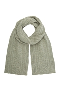

Most hats make you look stylish, and they certainly look very nice. Some are for fashion, and some are helpful. Here's some examples of pretty cool hats.
fancy looking hat, seems quite formal indeed;
a cap! very good for blocking yourself from the sun;
| These two hats have one thing in common; they are supposed to be worn on your head.
Feel chilly? A scarf will help to warm you up. Although most people would probably never wear scarves in a normal setting, they may in a formal setting. For example,
a fashion show for winter. A scarf will match the theme.
Here is what may be a picture of a scarf.
